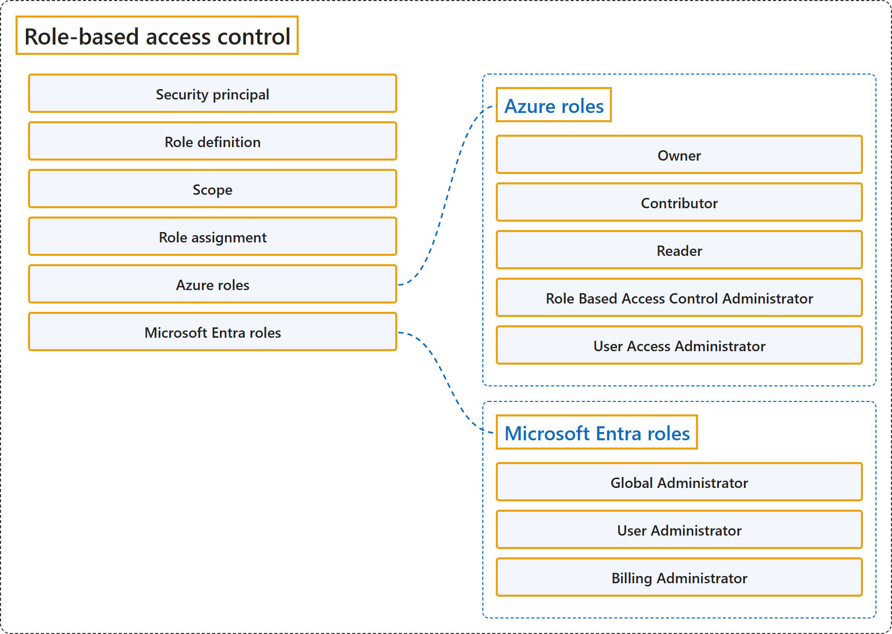

17.5 Role-Based Access Control
Classification

Glossary
| Term | Definition | 中文翻译 | Source |
|---|---|---|---|
| Security principal 安全主体 |
"A security principal is an object that represents a user, group, service principal, or managed identity that is requesting access to Azure resources." | 安全主体是一个代表用户、组、服务主体或托管标识的对象，该对象正在请求访问 Azure 资源。 | Microsoft, 2024, "Security principal" section, para. 1 |
| Role definition 角色定义 |
"A role definition is a collection of permissions." | 角色定义是权限的集合。 | Microsoft, 2024, "Role definition" section, para. 1 |
| Scope 作用域 |
"Scope is the set of resources that the access applies to." | 作用域是资源集合，即访问权限所适用的范围。 | Microsoft, 2024, "Scope" section, para. 1 |
| Role assignment 角色分配 |
"A role assignment is the process of attaching a role definition to a user, group, service principal, or managed identity at a particular scope for the purpose of granting access." | 角色分配是把角色定义附加到用户、组、服务主体或托管标识上、范围是特定作用域、以授予访问权限的过程。 | Microsoft, 2024, "Role assignments" section, para. 1 |
| Azure roles Azure 角色 |
"Azure roles control permissions to manage Azure resources" | Azure 角色控制权限，用于管理 Azure 资源 | Microsoft, 2026, "Differences between Azure roles and Microsoft Entra roles" section, para. 1 |
| Owner 所有者 (retired August 31, 2024: Service Administrator, Co-Administrator; Microsoft, 2026, "Classic subscription administrator roles" section, para. 1) |
"Grants full access to manage all resources"; "Assign roles in Azure RBAC" | 授予完全访问权限，以管理所有资源；在 Azure RBAC 中分配角色 | Microsoft, 2026, "Azure roles" section, table, Owner row |
| Contributor 参与者 |
"Grants full access to manage all resources"; "Can't assign roles in Azure RBAC"; "Can't manage assignments in Azure Blueprints or share image galleries" | 授予完全访问权限，以管理所有资源；在 Azure RBAC 中不能分配角色；不能管理 Azure Blueprints 中的分配，也不能共享映像库 | Microsoft, 2026, "Azure roles" section, table, Contributor row |
| Reader 读者 |
"View Azure resources"; "Applies to all resource types" | 查看 Azure 资源；适用于所有资源类型 | Microsoft, 2026, "Azure roles" section, table, Reader row |
| Role Based Access Control Administrator 基于角色的访问控制管理员 |
"Manage user access to Azure resources"; "Assign roles in Azure RBAC"; "Assign themselves or others the Owner role"; "Can't manage access using other ways, such as Azure Policy" | 管理用户访问 Azure 资源；在 Azure RBAC 中分配角色；给自己或他人分配所有者角色；不能用其他方式管理访问，例如 Azure Policy | Microsoft, 2026, "Azure roles" section, table, Role Based Access Control Administrator row |
| User Access Administrator 用户访问管理员 |
"The User Access Administrator role enables the user to grant other users access to Azure resources." | 用户访问管理员角色让用户能够授予其他用户访问 Azure 资源的权限。 | Microsoft, 2026, "Do Azure roles and Microsoft Entra roles overlap?" subsection, para. 1 |
| Microsoft Entra roles Microsoft Entra 角色 |
"Microsoft Entra roles are used to manage Microsoft Entra resources in a directory such as create or edit users, assign administrative roles to others, reset user passwords, manage user licenses, and manage domains." | Microsoft Entra 角色用于管理目录中的 Microsoft Entra 资源，例如创建或编辑用户、给他人分配管理角色、重置用户密码、管理用户许可证和管理域。 | Microsoft, 2026, "Microsoft Entra roles" section, para. 1 |
| Global Administrator 全局管理员 |
"Manage access to all administrative features in Microsoft Entra ID, as well as services that federate to Microsoft Entra ID"; "Assign administrator roles to others"; "Reset the password for any user and all other administrators" | 管理所有管理功能的访问（范围是 Microsoft Entra ID 以及与其联合的服务）；给他人分配管理员角色；重置密码（任何用户和所有其他管理员） | Microsoft, 2026, "Microsoft Entra roles" section, table, Global Administrator row |
| User Administrator 用户管理员 |
"Create and manage all aspects of users and groups"; "Manage support tickets"; "Monitor service health"; "Change passwords for users, Helpdesk administrators, and other User Administrators" | 创建和管理用户和组的各个方面；管理支持工单；监视服务运行状况；更改密码（用户、支持人员管理员和其他用户管理员） | Microsoft, 2026, "Microsoft Entra roles" section, table, User Administrator row |
| Billing Administrator 计费管理员 |
"Make purchases"; "Manage subscriptions"; "Manage support tickets"; "Monitors service health" | 进行购买；管理订阅；管理支持工单；监视服务运行状况 | Microsoft, 2026, "Microsoft Entra roles" section, table, Billing Administrator row |
References
- Microsoft. (2024, March 12). What is Azure role-based access control (Azure RBAC)? Microsoft Learn. https://learn.microsoft.com/en-us/azure/role-based-access-control/overview
- Microsoft. (2026, May 6). Azure roles, Microsoft Entra roles, and classic subscription administrator roles. Microsoft Learn. https://learn.microsoft.com/en-us/azure/role-based-access-control/rbac-and-directory-admin-roles